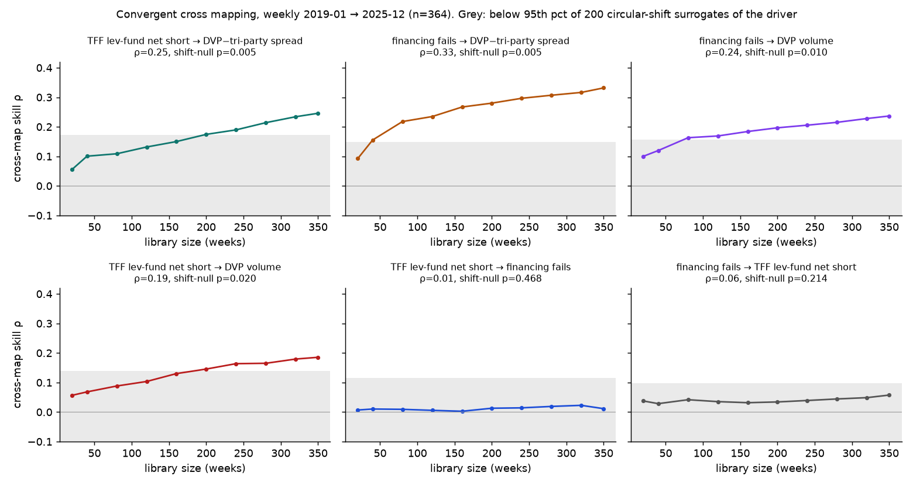
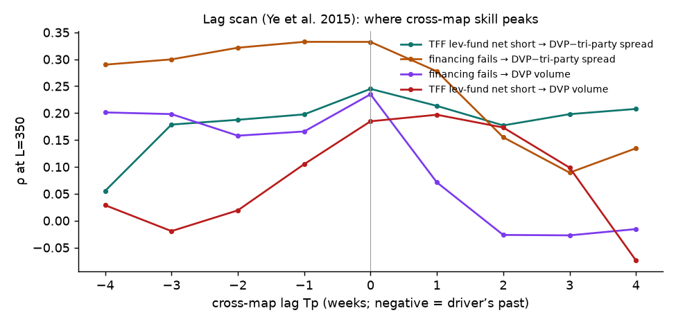
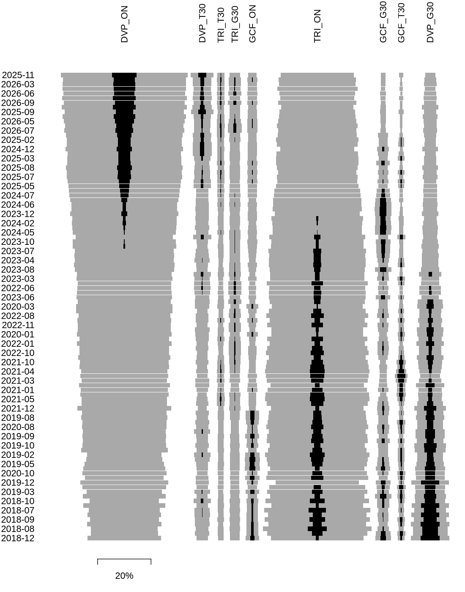
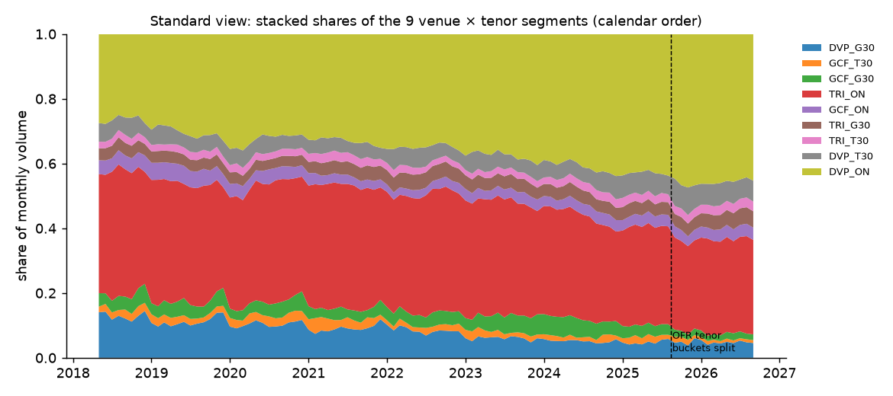
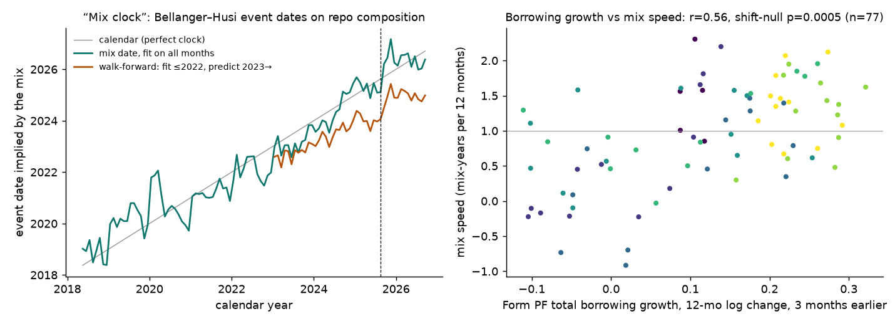

Sunday · November 15, 2026 · scheduled edition · aimed at Q1.4 and Q1.5 · exotic · public aggregate data
Methods scout
Two tools from fields that study systems they can’t experiment on. From fisheries ecology: convergent cross mapping, which asks whether one series’ dynamics carry a fingerprint of another. From archaeology: seriation, battleship plots and pottery-style “event dates”, which here put a date on the repo market’s venue-and-tenor mix. Together they cover the two Q1 sub-questions nobody had run yet: tenor and venue mix (Q1.4) and positioning versus funding (Q1.5).
● The repo mix runs like a clock. Ordering 101 months by venue × tenor mix alone recovers calendar order (Spearman −0.96; Porčić seriation test p < 0.001). Fitted on 2018–2022 only, the “mix clock” dates 2023–2026 months with a 1.06-year mean error, against 1.92 years for the naive baseline.● Form PF total hedge-fund borrowing growth leads the mix clock’s speed by 3–6 months (r = 0.56, shift-null p = 0.0005, Holm p = 0.009 over 18 tests). It holds in 2019–22 (r = 0.53) and 2023–25 (r = 0.42).● Weekly financing fails cross-map the DVP–tri-party spread (ρ = 0.33), and so do leveraged-fund Treasury-futures position changes (ρ = 0.25). Both pass a surrogate null (p = 0.005), both are stable across halves, and both reach Holm p = 0.05, the floor with 200 surrogates.● Leveraged-fund positioning and fails show no cross-map link in either direction (p = 0.21, 0.47), but linear Granger rejects both ways (p = 0.004, 0.001). The two tests disagree.
The short version
Data. Public aggregates only, from the lab’s copies of the public files. Q1.5: CFTC Traders in Financial Futures (leveraged-fund net short in 2y, 5y and 10y Treasury note futures), NY Fed primary-dealer Treasury financing fails, and the OFR DVP outstanding volume and DVP–tri-party overnight spread. Weekly, 2019-01-16 to 2025-12-31, n = 364. Q1.4: OFR repo volumes for 9 venue × tenor segments (DVP, GCF and the OFR “TRIV1” tri-party series, which does not show the Fed reverse-repo balloon that the all-in tri-party series shows; overnight/open, ≤30 days, >30 days), monthly averages 2018-05 to 2026-09; plus SEC Form PF tab 8.27 monthly borrowings (to 2025-12). No private Drive rows.
Method 1, convergent cross mapping (pyEDM; ecology). Two Holm-borderline directed links into the DVP–tri-party spread: fails → spread and leveraged-fund positioning → spread. No positioning–fails link. Verdict: interesting.
Method 2, seriation and event dates (kairos/tabula; archaeology). The 9-segment mix drifts almost monotonically toward DVP overnight and short-term DVP. The battleship (EPPM) plot shows a three-stage hand-off that the stacked-area chart hides. Form PF borrowing growth leads how fast that drift happens. Verdict: recommend for promote workflow (nothing promoted; Jared approves).
Not repeated. CRQA, IDR, ebnm, DenseLines, codyn, Lovell ρ, ecotraj, lphom and the earlier picks were not re-run. No overlap with the watchlist.
Questions
Where each question stands
Q1 · in progress
Q1.4 (tenor and venue mix): first run today. The mix has a strong one-way drift. CA axis 1 holds 69% of inertia and tracks time (ρ = −0.96). Form PF total borrowing growth leads the drift’s speed by 3–6 months. Q1.5 (positioning vs funding): first run today. Leveraged-fund positioning changes leave a cross-map fingerprint in the DVP–tri-party spread, not in fails. Q1.1–Q1.3 build on the 11-14 CRQA: CCM gives the fails–spread link a direction (fails → spread, ρ = 0.33, versus 0.16 the other way).
Q2 · in progress · not targeted today
No Q2 analysis today. Synthetic mocks only; nothing new on data.
Q3 · in progress · not targeted today
No Q3 analysis today. The 11-14 IDR results stand.
Method 01
Convergent cross mapping: whose fingerprint is in whose dynamics?
Sugihara, May, Ye, Hsieh, Deyle, Fogarty & Munch (2012), “Detecting causality in complex ecosystems”, Science 338:496–500 · Ye, Deyle, Gilarranz & Sugihara (2015), “Distinguishing time-delayed causal interactions using convergent cross mapping”, Scientific Reports 5:14750, doi:10.1038/srep14750 · pyEDM 2.5.7 (Sugihara Lab, UCSD license; cppEDM C++ core for 1.x, NumPy/SciPy for 2.x) · field: fisheries and population ecology · novelty: exotic-transfer · interesting
Surrogate nulls for free: reuse the neighbour sets
In a shift-surrogate test, the responder’s shadow manifold never changes. Only the driver values being predicted move. Neighbours can be found once, and each surrogate then costs \(O(nk)\). A Rust core with this reuse, checked against pyEDM, would make 10,000 surrogates cheap and lift today’s p-value floor (1/201). Effort S–M.
Test. ρ parity ≤ 1e-12 with pyEDM 2.5.7 on all 10 directions at full library. The 10 × 200 null in < 1 s (today: 148 s).
2 · MathEffort M
A familywise partial-CCM network
Condition each cross map on the third and fourth legs (partial cross mapping) to separate direct links from indirect ones. Add persistence-preserving surrogates and max-T control over every edge of the 4-node graph.
Test. On simulated 4-node chains at our persistence: size 5% ± 1.5 points, and indirect edges removed ≥ 80% of the time. Then: does positioning → spread survive conditioning on fails?
3 · New use on our dataEffort S
Rolling CCM on the late-2025 switch-off (Q1.2–Q1.3)
CRQA showed the fails–spread coupling turning off after July 2025. Rolling 2-year CCM would show whether the direction (fails → spread) faded first, or positioning → spread took over.
Test. Windows and episodes fixed in advance, with a surrogate null per window and Holm across windows. An honest miss counts.
Target question. Q1.5 (positioning vs funding), plus direction for Q1.1 (lead/lag).
What it is. Build a “shadow manifold” for a series \(Y\) from its own lags, \(\mathbf{y}_t = (y_t, y_{t-1}, \dots, y_{t-E+1})\). If \(X\) drives \(Y\), then \(Y\)’s history contains information about \(X\) (Takens’ theorem). So the \(E+1\) nearest neighbours of \(\mathbf{y}_t\) predict \(x_t\):
$$\hat x_t = \sum_{i=1}^{E+1} w_i\, x_{t_i},\qquad w_i \propto e^{-d_i/d_1},\qquad \rho_L = \mathrm{cor}(x_t, \hat x_t).$$
“X drives Y” is read when \(\rho_L\) is positive and rises with the library size \(L\) (convergence). The direction is the opposite of Granger’s: the effect’s manifold recovers the cause. \(E\) is chosen per series by simplex skill (first half to fit, second half to test). Every cross map uses a 4-week exclusion radius. Null: 200 circular shifts of the driver by at least 26 weeks, with \(\rho\) recomputed at \(L = 350\). This keeps the driver’s persistence and breaks the alignment.
Why this, not Granger. Granger asks whether \(X\)’s past improves a linear forecast of \(Y\). It can be fooled by shared cycles and by state-dependent links. CCM needs no model and reads state-dependent (nonlinear) coupling. It does assume the system is close to deterministic, so we check that first.
1a · Positioning, funding and fails: who cross-maps whom (Q1.5, Q1.1)

Cross-map skill vs library size. The grey band is below the 95th percentile of the driver-shift null at L = 350. Data: CFTC TFF, NY Fed fails, OFR repo; weekly 2019-01 → 2025-12.
Direction (driver → responder)
E
ρ at L=20
ρ at L=350
Null 95th
p (shift)
Holm p
Granger min p
Financing fails → DVP–tri-party spread
8
0.092
0.332
0.148
0.005
0.050
0.017
TFF lev-fund net short → spread
8
0.056
0.246
0.173
0.005
0.050
0.027
Fails → DVP volume
6
0.100
0.237
0.157
0.010
0.080
0.103
TFF lev-fund net short → DVP volume
6
0.057
0.185
0.139
0.020
0.139
0.188
Spread → fails
5
0.076
0.157
0.134
0.040
0.239
< 0.001
DVP volume → fails
5
0.055
0.160
0.159
0.055
0.274
0.174
Fails → TFF lev-fund
2
0.037
0.058
0.098
0.214
0.856
0.004
DVP volume → TFF lev-fund
2
−0.006
0.040
0.115
0.284
0.856
0.003
TFF lev-fund → fails
5
0.007
0.011
0.116
0.468
0.935
0.001
Spread → TFF lev-fund
2
0.010
0.010
0.078
0.468
0.935
0.016
Reading. The spread is the series whose dynamics remember the others. Its shadow manifold recovers both weekly fails (ρ = 0.33) and leveraged-fund position changes (ρ = 0.25). Both curves converge (+0.24 and +0.19 from L = 20 to 350). The reverse directions are weaker: spread → fails reaches 0.16 (p = 0.04, not Holm-significant), and spread → positioning is 0.01. This gives a direction to the 11-14 CRQA same-week anti-recurrence between fails and the spread: fails drive the spread more than the reverse. Positioning and fails do not cross-map at all, either way. The 0.005 p-values are the smallest possible with 200 surrogates. After Holm they sit exactly at 0.05, so treat them as borderline until the Engineering avenue allows more surrogates.
1b · Lag scan, nonlinearity, and Granger as the plain baseline

Cross-map skill at L = 350 for lags Tp = −4…+4 (Ye et al. 2015). A peak at a negative lag means the driver’s past is best recovered, which fits a delayed effect.
Series (own dynamics)
E
Simplex ρ
S-map ρ, θ = 0 (linear)
Best S-map ρ (θ)
Financing fails (Δlog)
5
0.368
0.410
0.453 (1.5)
DVP–tri-party spread (Δ)
8
0.430
0.451
0.542 (1.5)
DVP volume (Δlog)
6
0.261
0.195
0.307 (9)
TFF lev-fund net short (Δ)
2
0.069
0.048
0.076 (5)
Fails → spread peaks at −1 week. Positioning → spread and fails → DVP volume peak at 0. The spread, fails and DVP volume all predict better with state-dependent (θ > 0) S-maps than with a linear map (+0.09, +0.04 and +0.11). That is the regime where CCM can see what Granger cannot. Weekly leveraged-fund position changes are close to unpredictable from their own past (ρ ≈ 0.07), so they work only as a driver, never as a responder manifold. Baseline disagreement: linear Granger rejects positioning ↔ fails in both directions (p = 0.001 and 0.004), and positioning ↔ DVP volume too (p = 0.003). CCM finds nothing for either pair. Granger significant both ways with no CCM skill is the classic sign of a shared linear cycle, such as month-end and quarter-end timing, rather than coupling. That is a hypothesis, not tested here.
The two links into the spread hold in both halves. The two links into DVP volume exist only after mid-2022, when DVP outstanding roughly doubled (from about $1.4tn in 2022 to $3.3tn in 2025, yearly means). That is a regime change in the relationship itself (Q1.3), and a natural place for the rolling-window avenue.
Speed, limitations and verdict
Speed. One 10-point convergence curve (100 random libraries per point) takes 1.36 s. The full run (4 embeddings, 10 directions × 200 surrogates, lag scans, Granger, halves) took 148 s single-threaded.
Limitations. CCM assumes weakly noisy deterministic dynamics. These are noisy weekly differences with ρ values of 0.2–0.3: real but modest. The positioning series is an unweighted sum of 2y, 5y and 10y contracts, not DV01-weighted. The lab’s TFF copy stops at 2025-12-30 (one more row on 2026-09-29), so the panel ends there. Two holiday weeks without a fails release were interpolated. The circular shift wraps the end of each series onto its start. Descriptive only; not a trading signal.
Verdict: interesting. It gives a direction to the fails–spread link and a clean “no” on positioning vs fails, where Granger says “yes”. Results are Holm-borderline until the null is cheaper.
Method 02
Seriation, battleship plots and a mix clock: dating the repo market like pottery
Frerebeau, N. (2026), kairos: Analysis of Chronological Patterns from Archaeological Count Data, R package (CRAN 2.3.0; site lists 2.4.0), doi:10.5281/zenodo.5653896 · tabula 3.3.2 (JOSS, doi:10.21105/joss.01821) · Bellanger & Husi (2012), Journal of Archaeological Science 39(4):777–790, doi:10.1016/j.jas.2011.06.031 · Porčić (2013), Journal of Archaeological Science 40(12):4552–4559, doi:10.1016/j.jas.2013.07.013 · Desachy (2004), EPPM seriograph, Revue archéologique de Picardie 3(1):39–56 · field: archaeology (ceramic chronology) · novelty: exotic-transfer · obscure (tesselle project, Université Bordeaux Montaigne; development on Codeberg) · GPL-3 · recommend for promote workflow
Found via. Web search for archaeological seriation software on 2026-11-15. It turned up the tesselle package site, https://packages.tesselle.org/kairos/ (with the Codeberg repo codeberg.org/tesselle/kairos), and the tabula paper in JOSS, joss.theoj.org/papers/10.21105/joss.01821. The method references (Bellanger & Husi 2012; Porčić 2013; Desachy 2004) were taken from the kairos reference list. Installed from CRAN on 2026-11-15. Not found via X or SSRN.
1 · EngineeringEffort S
A Python port of CA seriation, the Porčić test and event dates
The three pieces are small linear-algebra routines: CA by SVD, a mode count over permutations, and a regression on CA coordinates. A faithful NumPy port, with Rust for the permutation test, would run them inside the lab’s Python pipelines and on daily data with bootstrap bands. kairos 2.3.0 is the oracle.
Test. CA coordinates ≤ 1e-10 (up to sign), event dates ≤ 1e-8, identical mode counts under shared permutations. Then 10,000-permutation assess on 2,000 days in < 1 s.
2 · MathTop pick
A taxonomy-robust mix clock with a time-series null
The event model treats months like independent pottery deposits and assumes the type list never changes. Both fail here: OFR split its ≤30-day bucket in August 2025, and the clock jumped a full year. Make re-defined buckets supplementary CA columns tied by an aggregation constraint, and bootstrap the event intervals in blocks. Effort M.
Test. The 2025-08 jump (−0.51 → +0.50 years) shrinks below 0.15 years, and the walk-forward MAE (1.06 years) does not get worse. Pre-registered.
3 · New use on our dataEffort S
Collateral-mix and positioning-mix clocks (Q1.4, Q1.5)
Build the same clock on tri-party collateral (Treasury, agency, corporate, other) and on TFF open interest by trader type. Then ask whether Form PF borrowing growth leads them too, or whether the lead is specific to venue and tenor.
Test. Form PF lead 3 and lead 6 vs clock speed, with circular-shift p < 0.05 after Holm, stated in advance. Today’s venue × tenor result is the reference.
Target question. Q1.4: does the repo venue and tenor mix change when Form PF borrowings rise?
What it is. Archaeologists date graves by the mix of pottery types in them (Petrie 1899). Types come into and go out of fashion, so ordering deposits to make every type’s frequency rise and then fall (unimodal, a “battleship”) recovers time. Here a deposit is a month and the types are 9 repo segments, with monthly-average dollar volume (in $bn) as the counts.
Seriation orders months and segments by their first correspondence-analysis axis.
Porčić’s test counts the total number of modes across types after seriation, then compares it with randomly permuted orders (fewer modes means a better fit to the seriation model). It reports a coefficient from 0 to 1.
The event date (Bellanger & Husi) regresses known dates on the leading CA row coordinates, \(\hat t_i = \beta_0 + \sum_k \beta_k F_{ik}\). Any mix then gets a date. We read \(\hat t_i - t_i\) as “how old or new the mix looks”, and 12-month changes in \(\hat t\) as the mix speed, in mix-years per calendar year.
The EPPM seriograph (Desachy) blackens each type’s share above its column mean, so hand-offs between types stand out.
2a · The mix is a clock: seriation vs calendar, battleship plots vs stacked areas (Q1.4)

EPPM seriograph (tabula). Rows are months in seriated order, which is close to calendar order. Grey bars are shares; black marks the share above that segment’s average. Read it as a three-stage hand-off.

The standard view of the same data. The DVP-overnight widening shows; the mid-period GCF-term episode and the end of the tri-party-overnight excess are hard to see.
Statistic
Value
CA inertia, axes 1–4
69.3% · 12.5% · 7.7% · 4.4%
Spearman, seriated month order vs calendar order
−0.964 (sign is arbitrary)
Porčić test: observed total modes vs random 5th percentile (1,000 permutations)
248 vs 286; 0/1000 random orders as low (p < 0.001)
Seriation coefficient (0 = none, 1 = perfect)
0.52
Segment scores on axis 1 (oldest → newest)
DVP >30d 0.36 · GCF ≤30d 0.26 · GCF >30d 0.16 · TRI ON 0.10 · GCF ON 0.06 · TRI >30d −0.06 · TRI ≤30d −0.08 · DVP ≤30d −0.15 · DVP ON −0.16
Reading. A single direction, from “term DVP and tri-party overnight” to “overnight and short-term DVP”, explains 69% of the mix variation and orders months almost exactly by date. The EPPM plot shows the path. Above-average DVP >30d and tri-party overnight shares dominate 2018–2022. GCF term (>30d) is above average in 2023–mid-2024. DVP overnight takes over from late 2024. The coefficient of 0.52 says the drift is real but not purely “one fashion after another”: some segments, like GCF overnight, go up and down more than once.
2b · The mix clock, walk-forward, and its link to Form PF borrowings (Q1.4 direct)

Left: the mix clock (event model on 101 months) and an honest walk-forward version (trained on 2018-05 → 2022-12, predicting 2023-01 → 2026-09). The dashed line marks OFR’s tenor-bucket split. Right: Form PF tab 8.27 total borrowing growth (12-month log change, 3 months earlier) vs mix speed, 2019–2025.
Test
Result
Event model fit, mix date vs calendar (all months)
R² = 0.93
Walk-forward (train ≤ 2022, 56 months; test 45 months): MAE
1.06 years vs 1.92 for “last training date”; cor 0.95
Form PF total borrowing growth, lead 3 months → mix speed
r = 0.56, shift p = 0.0005, Holm p = 0.009 (18 tests), n = 77
Same, lead 6 months
r = 0.54, shift p = 0.0005, Holm p = 0.009, n = 74
Robustness: drop months from 2025-08 (bucket change)
lead 3: r = 0.56 (p = 0.0005, n = 72); lead 6: r = 0.54 (n = 69)
Reading. When hedge-fund borrowing in total grows faster, the repo mix moves faster toward overnight and short-term DVP 3–6 months later. The link holds inside both sub-periods, so it is not just the shared rise of 2023–25. The prime-broker line alone does not carry it, which matches the 11-14 CRQA finding of no familywise prime-broker link. Reverse-repo borrowing points the same way but is not significant alone under the shift null. The walk-forward clock lags reality from 2023: trained on 2018–22, it sees the 2023–26 mix as “2023–2025”. That is shrinkage in a linear extrapolation, and it says the post-2022 drift is faster than the earlier one (mix speed 1.05–1.34 mix-years per year in 2023–25, against 0.45–0.89 in 2020–22).
2c · Stability across windows, and timing
Window
Seriated order vs calendar (Spearman)
Segment order on axis 1 (oldest → newest)
2018-05 → 2022-06 (50 months)
−0.87
GCF ON · GCF >30d · DVP >30d · DVP ≤30d · TRI ON · GCF ≤30d · TRI >30d · TRI ≤30d · DVP ON
2022-07 → 2026-09 (51 months)
−0.92
GCF >30d · GCF ≤30d · DVP >30d · TRI ON · TRI >30d · GCF ON · DVP ON · TRI ≤30d · DVP ≤30d
Each half is still a clock (−0.87 and −0.92). The order of segments is only loosely stable (Kendall τ = 0.28 between halves): DVP overnight is “new” in both, but which term segments are fading changes. So the clock is robust and the type sequence is not. Read individual segments from the EPPM plot, not from one axis score. Timing: one seriation takes 1.5 ms; the 1,000-permutation Porčić test takes 1.8 s; the full R script runs in 2.5 s.
Limitations and verdict
Limitations. Dollar volumes are not artifact counts, so CA weights months by size. Tri-party is transaction volume while DVP and GCF are outstanding volume, so the shares compare like with like only within each venue. OFR split ≤30 days into 2–7 and 8–30 days on 2025-08-14 (summed back here), and the clock jumps about a year at that point. The event model’s intervals assume independent deposits, which months are not. The Form PF tests are on overlapping 12-month changes; the circular-shift null keeps their persistence. Form PF dates are reference months, not publication dates. Descriptive only.
Verdict: recommend for promote workflow (Jared decides; nothing is promoted). It is a new graph for a compositional time series, and it gives one honest out-of-sample check and a Holm-surviving Q1.4 link. It needs the taxonomy fix before anything else is built on it.
Watch
Watchlist additions
Both picks are added to the watchlist as trialed. New watch items, all seen on 2026-11-15 and not run:
tEDM: partial cross mapping (R; Leng et al., “Partial cross mapping eliminates indirect causal influences”, Nature Communications 11:2632, 2020). Exotic-transfer from nonlinear dynamics. Found via web search, stscl.github.io/tEDM/reference/pcm.html and nature.com/articles/s41467-020-16238-0. Closest prior work for the CCM Math avenue.
IDSS: Iterative Deterministic Seriation Solutions (Python; Lipo, Madsen & Dunnell, PLOS ONE 10(4):e0124942, 2015). Archaeology, obscure (4 GitHub stars). Finds all valid unimodal orders, including branching ones. Found via web search, github.com/clipo/idss-seriation. Would test whether the repo mix has more than one valid sequence.
statcomp (R; Sippel, Lange & Gans; ordinal-pattern entropy–complexity plane, after Bandt & Pompe 2002). Climate and biogeochemistry, niche (v0.1.0, 2019). Found via web search, CRAN statcomp. Separates noise from structured dynamics: a pre-check for CCM.
seriation (R; Hahsler, Hornik & Buchta, Journal of Statistical Software 25(3), 2008). Combinatorial data analysis and archaeology. Found via web search, jstatsoft.org/article/view/v025i03. Candidate for Q2: seriated lasagna plots of hundreds of short program histories (combines with the Lasagna-plot watch item).
Nothing already trialed was rerun. Research-lab PRs #20, #21 and #25 were not touched. No APPROVAL.md was written; nothing is promoted.